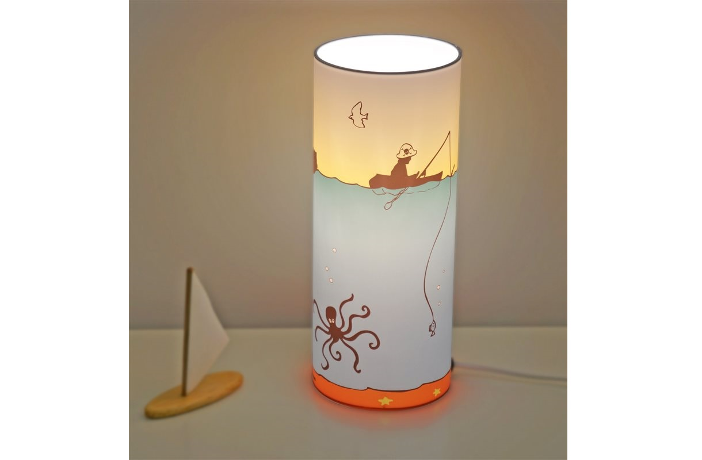

Naktiniai žibintai (84 nuotraukos): naktinis lemputė miegamajame mėnulio formos su judesio jutikliu, lempos suaugusiems - Apšvietimas - 2020
- Mieli LED „Flamingo“ vienaragio naktiniai žibintai ...
Gintaro baldai naktiniai staliukai Jūsų miegamajam – vienas geriausių pasirinkimų, norintiems organizuoti patogią, jaukią, tvarkingą ir skoningą erdvę apie savo lovą, tačiau nenorintiems mokėti krūvos pinigų už naktinį staliuką.Gintarobaldai.lt svetainėje rasite modernaus ir klasikinio dizaino naktinių staliukų itin žema kaina. - Naktiniai staliukai | Gintaro baldai
Naktiniai žibintai. Naujos prekės Naujas geležies virtuvės ritininis popierinis rankšluosčių laikiklis tualetinio popieriaus laikiklis Audinių laikymo stovas Kabineto kabyklos lentynų virtuvės organizatorius EUR € 11.10 Išparduota. 2018 virtuvė Nešiojama pakabinamoji drenažo dėžė Nuleidimo lentynos krepšelis Vonios laikymo ... - Naktiniai žibintai ant akumuliatorių (29 nuotraukos ...
Ultravioletiniai prožektoriai ir žibintuvėliai. Ultravioletinis žibintuvėlis su savo UV šviesa padės jums atpažinti netikras kupiūras, padės gintaro paieškoje, žvejyboje flourescenciniais masalais, rasti skysčių nutekėjimą automobilyje ir kitose situacijose. - LED naktiniai žibintai (40 nuotraukų): vaikų medienos ...
LED naktiniai žibintai - tai ateities žibintai, kurių išskirtiniai bruožai yra išskirtinai ilgas tarnavimo laikas ir didelis funkcionalumas. Produktai plačiai naudojami miesto apartamentuose ir kaimo namuose, jie lengvai integruojami į šiuolaikinį interjerą. - Naktiniai žibintai - Internetinė Parduotuvė
Naktiniai žibintai - Geriausios kainos, greitas pristatymas, kokybės užtikrinimas! Ateikite ir pasirinkti. Mūsų parduotuvė laukia tavęs. - Naktiniai žibintai žmonių partijos Įvykiai tapetai ...
Prekės tipas: „Night LightsIs“ baterijos: Nenaudojama: „HolidayModel“ numeris: L3D478Sertifikacija: RoHS, ce, FCC, EMCPower Šaltinis: Sausi akumuliatoriai ... - Naktiniai naktiniai žibintai nuo drugelio prie lovos ...
Naktiniai žibintai ant baterijų - puikus pasirinkimas kūdikio kambariui. Stiprybės ir trūkumai. Vaikų naktiniai žibintai ant baterijų turi neabejotinų pranašumų, todėl jie yra paklausūs. Pagrindinis šio priedo privalumas yra jo saugumas. Jis gali dirbti visą naktį, o tėvai bus ramūs, kad jų kūdikis būtų visiškai apsaugotas. - Šviestuvai, Žibintai | Gintaro baldai internetu
Naktiniai staliukai, veidrodžiai (8) Lovos (27) Vaikų ir jaunuolių kambario baldai (46) Lentynos (8) Kabyklos (2) Komodos (8) Vaikiškos kėdės (55) Lovos (9) Komplektai (6) ... Žibintai, žvakidės, žvakės Puslapyje rodyti: Filtruoti: Grįžti atgal. Kaina. Filtruoti ... - Naktiniai žibintai (84 nuotraukos): naktinis lemputė ...
Kokie įdomūs naktinio apšvietimo modeliai šiandien? Pavyzdžiui, naktinis lemputė miegamajame su mėnulio forma su judesio jutikliu bus įdomus visiems ir taps namo akcentu. Suaugusiųjų lempos gali būti aprūpintos žadintuvu, o vaikams - vaiko verkimo funkcija. - 11 naktinių žibintų, kurie jūsų vaiko kambaryje atrodys ...
Naktiniai žibintai gali atrodyti kaip šiek tiek smulkūs, palyginti su visa kita, kas jums reikia, kad užbaigtumėte savo vaiko erdvę, bet jie taip pat yra labai svarbūs - jie daro vaikus jaustis patogiai tamsoje, o tai reiškia, kad jie gauna daug naudos. Taigi, jūs žinote, kad jūs taip pat galite padaryti kuo mielesnius.
Populiarios Temos
Šaldytuvų patikimumas ir kokybė
VirtuvėGipskartonio tvirtinimo detalės: atrankos kriterijai
RemontasSulankstomos vidaus durys
DurysDargez pagalvės
Namų tekstilėRedaktoriaus Pasirinkimas - 2020
Mozaikos dušo padėklas: idėjos ir jų įgyvendinimas
Siauros salės komodos: pasirinkimo ypatybės
Daugiaspalviai šviestuvai
Džiuto kilimas
Emigres plytelės: pasirinkimo savybės
Vaikų sofos
Populiarios Kategorijos
Studijos tipo apartamentai Baldai Sienų dangos Dizainas ir išdėstymas Miegamasis VirtuvėIkea sofos
„Porta Prima“ durys
Candy šaldytuvai
Baro skaitiklis tai patys virtuvė
Standartinis šaldytuvo dydis
Pagrindinis Studijos tipo apartamentai Baldai Sienų dangos Dizainas ir išdėstymas MiegamasisNaktinių lempų mados modeliai
Šiuolaikiniame pasaulyje tapo madinga naudoti naktinius žibintus namų apšvietimui. Nepaisant šio pavadinimo, naktinė šviesa ne visada naudojama apšviesti naktį. Kai kurie modeliai skirti montuoti į sandėliukas, laiptus ar vonios kambarį. Viskas priklauso nuo prietaiso funkcionalumo ir suaugusiųjų norų.
Tikslas
Šviesių naktinių lempų nauda gana daug. Tai leidžia jums apšviesti erdvę pakankamai, kad būtų galima pamatyti aplinkinius objektus. Naktinis apšvietimas šviečia daug spindesniu nei fluorescencinė lempa, tačiau jis turi minkštą, slopinamą šviesą. Tai dažnai yra reikalinga miegamojo vietos organizavimui vaikų darželyje.
Paprastai naktiniai žibintai gauna jaunus tėvus. Jie įrengia daiktus į darželį arba savo miegamajame virš lovelės, kad bet kuriuo atveju galėtų pamatyti savo vaiką. Tai labai patogu, nes minkšta tamsiai šviesa netrukdo vaikui ramiai miegoti ir padeda jam jaustis saugiai.
Tačiau ne tik vaikams reikia naktinių lempų, o kai kurie suaugusieji nori naudoti naktinius žibintus savo miegamuosiuose. Galų gale, kai kurie žmonės yra priversti pakilti anksti darbui, ir susirinkti tamsoje yra gana sudėtinga užduotis. Įjunkite šviesą ir pažadinkite sutuoktinį taip pat neįmanoma, tačiau galite įjungti naktį. Jis nekliudo miegamojui, nes jis neturi ryškios blykstės.
Ypač vaikams yra projektoriai, turintys gabalų ant sienų paviršiaus, kurie atsispindi kambario paviršiuje, kai prietaisas yra įjungtas. Taigi vaikai gali apsvarstyti žvaigždėtą dangų ar akvariumo žuvis, neišeinant iš namų.
Kai kuriuose modeliuose yra keičiamų kasečių, kurios padeda pakeisti pažįstamą aplinką. Tokie modeliai yra ypač įdomūs vaikams, nes vaizdas gali būti keičiamas bent kiekvieną dieną.
Šviestuvai, kurie reaguoja į kūdikio verkimą, yra svarbūs tėvams. Kai kurie iš jų net gali automatiškai įtraukti ramią melodiją, kad nuramintų kūdikį.
Be tiesioginės paskirties, naktiniai žibintai atlieka kitą svarbią funkciją - dekoruoja kambarį. Kai kurie modeliai yra pagaminti neįprastu dizainu, kuris gali papuošti bet kokią erdvę ne tik naktį, bet ir per dieną.
Pagrindinės saugios priemonės savybės
Visų pirma, naktinis apšvietimas turėtų būti patogus tėvams, ypač jei namuose yra mažas vaikas. Ji turi būti minkšta, slopinama šviesa, kuri nesupjaustys akių ir netrukdys miegoti.
Svarbiausias prietaiso dalykas yra saugumas. Todėl medžiaga turi būti aukščiausios kokybės. Dabartinėje rinkoje dominuoja plastikiniai gaminiai ir jie gali imtis bet kokios formos. Dėl lengvo perdirbimo plastiko, jis yra labai populiarus tarp pirkėjų. Tačiau jos kokybė ne visada artima idealui.
Pasak ekspertų, geriausia pirkti lempas, pagamintas iš medžio ar plexiglass. Mediena yra ekologiška medžiaga, kuri gali kvėpuoti. Tai ypač gerai, nes nesukelia alerginių reakcijų, nes gali sukelti sintetinių medžiagų.
Įrenginio saugumas taip pat priklauso nuo dangos kokybės. Dažnai lempos yra padengtos žemos kokybės dažais, kuriuose yra daug cheminių medžiagų. Jis labai greitai ištrinamas ir skleidžia tam tikrą kvapą. Todėl geras naktinis apšvietimas nebus pigus.
Kokybiškame įrenginyje visi laidai, jungikliai ir lempų laikikliai yra sujungti į vieną. Ji neturėtų turėti žetonų, pažeidimų ir aštrių kampų.
Prietaiso saugumas priklauso nuo šviesos šaltinio. Dauguma naktinių žiburių veikia elektrinės kaitinamosios lempos, kuri yra trapi, sąskaita. Tai lengva sulaužyti ar atsukti, o net ir mažas vaikas gali lengvai susidoroti. Todėl atsižvelgiama į saugiausias LED lempas. Tačiau jo šviesa turėtų būti minkšta ir netgi lygi, nesukelianti nemalonių regėjimo pojūčių.
Geras naktinis apšvietimas turėtų lengvai įjungti ir išjungti. Ir geriausia, jis dirbo su baterijomis. Daugelis laidų, išilginių iki lizdo, nepadidina prietaiso saugumo.
Kitas labai svarbus momentas kokybiškam žibintui yra patikimas ir patikimas gamintojas. Didesnį saugumą gali garantuoti tik gerai žinomi prekiniai ženklai, kurie pasitiki daugeliu pirkėjų.
Veislės
Yra daug naktinio apšvietimo modelių, kurie skiriasi nuo formos, spalvos, dydžio, dizaino, funkcijų ir darbo būdo. Dideliame sąraše galite pasirinkti pagrindinius įrenginių tipus:
Sieninis montavimas pritvirtintas prie sienos paviršiaus ir laikomas specialiu drabužine. Šią naktinę šviesą lengva perkelti iš vienos vietos į kitą. Yra modelių, kuriuose ant nugaros sienelės yra lipni juosta, kuri pritvirtina prietaisą prie sienos. Lauke primena grindų šviestuvą, bet daug mažiau šviečia. Tokie prietaisai naudojami kaip šviesūs gyvenamųjų patalpų apšvietimas, sukuriantys romantišką šviesą. Nakvynė Tai mažas prietaisas, kuris kabo ant lovos galvos. Jis veikia su baterijomis ir švelniai šviečia. Vienas iš garsiausių naktinio apšvietimo modelių yra mobilus vaikams. Dienos metu jis atlieka žaislo vaidmenį, o naktį jo pagrinde apšviečia blykstė.Lentelė Atrodo, kaip paprastas stalo lempa, kurį galima įdėti į naktinį stalą. Jis gali veikti skirtingais apšvietimo režimais, kuriuos galima keisti. Naktinis šviesos žaislas Tai paprastas žaislas, kuriame yra apšvietimo įtaisas. Daugelyje modelių yra papildomų funkcijų, leidžiančių prietaisui skleisti garsus ir melodijas. Projektorius - įtaisas, turintis skyles ant įvairių sienų sienų, iš kurių atsispindi šviesa. Populiariausias modelis yra „žvaigždėtas dangus“, kuris labai gražiai išsklaido šviesą ant kambario paviršiaus ir sudaro daug žvaigždžių. Kai kurie modeliai gali pasukti ir sukurti realybės iliuziją.
Protingas naktinis apšvietimas įrengta judesio atsako funkcija arba šviesos laipsnis. Išmanusis įrenginys taip pat gali reaguoti į garsą. Kištukas - Prietaisas įdedamas tiesiai į lizdą ir veikia tik iš tinklo. Jo kaina paprastai yra maža, o dizainas yra įvairus. Tačiau toks įrenginys apšviečia nedidelį kambario plotą ir tinka tik miegoti.
Druska atrodo kaip tuščiaviduris keraminis indas, kuriame yra lemputė, padengta druska. Ši lemputė skleidžia minkštą šviesą ir išgydo orą dėl druskos garų. Originalas atrodo nešiojamas lempa su lempa kuris yra miegamojo apdaila.
Naudingos papildomos funkcijos
Šiuolaikiniuose įrenginiuose yra daug naudingų funkcijų, kurios labai supaprastina gyvenimą:
Įrenginys su judesio jutikliu reaguoja tik į asmens judėjimą ir tam tikrą laiką įsijungia. Ši naktinė šviesa yra labai patogu įrengti vonioje arba tamsioje laiptinėje. Taip pat naudinga įrenginys su šviesos jutikliu, kuris reaguoja į patalpų apšvietimo pokyčius. Tamsesnis kambarys, tuo ryškesnė naktinė šviesa.Labai patogus ir praktiškas. naktinis apšvietimas su nuotoliniu valdymu. Galite įjungti ir išjungti nuotolį, neišeinant iš lovos. Palieskite šviesą kaip visi originalumo mėgėjai. Galite keisti apšvietimo laipsnį paliesdami.
Kai kurie naktiniai žibintai reaguoja į garsą. Pvz., Kūdikio verkimas ar rankų pririšimas. Vaikų lempa, be šviesos, gali apimti tylią melodiją. Laikmačio funkcija laikoma pakankama, kuris leidžia nustatyti tikslų laiką ir išjungti įrenginį. Ši funkcija yra būtina, kad vaikai užmigtų šviesoje ir miega jau visiškai tamsoje.
Neįprastos galimybės
Apšvietimo parduotuvių lentynose rasite daug įdomių naktinių lempų modelių. Tarp jų yra įprastų formų ir spalvų modeliai, o jų išvaizda stebina lempas:
Vienas iš įdomiausių naktinių šviesų yra „Gėlė puode“. Jis gali turėti skirtingą dizainą: raudoną rožę, saulėgrąžą, leliją ir tt Šis originalus dizainas sukurs paslaptingą atmosferą namuose ir taps jo puošmena. Svarbiausia, kad tokia lempa atrodo originali ne tik naktį, bet ir per dieną. Neįprastas modelis, pvz naktinio dangaus projektorius kartu su žibintuvėliu. Jo pranašumas yra tas, kad jis atlieka dvi svarbias funkcijas: stovyklavimo žibintą ir naktinę šviesą, kuri sukurs žvaigždės dangaus iliuziją ant kambario lubų. Žinoma, ši galimybė bus naudinga bet kuriam vaikui.Kita įdomi idėja yra muzikos lempa. „Plazminis kamuolys“ . Jame vyksta žaibas, o jame groja maloni melodija. Prietaisas veikia tinkle ir reaguoja į liesti. Modelio unikalumas 3D lempos Spiral yra tai, kad LED lemputės skleidžia trimatį vaizdą ir sukuria optinės iliuzijos poveikį. Šis dizainerio įrenginys veikia tinkle ir turi tris šviesos spalvas.
Šviesa mėnulio forma Patikimai vaizduoja mėnulio paviršių ir rodo pagrindinius mūsų palydovo judėjimo etapus. Prietaisas valdomas naudojant valdymo skydelį, ir, svarbiausia, galima reguliuoti apšvietimo laipsnį. Jis tvirtinamas prie sienos ir veikia ant baterijų. Vaikams geriausia dovana bus puiki naktinė šviesa Penguin , kuris dienos metu gali tarnauti kaip įprastas žaislas. Nuo to momento, kai prietaisas įjungtas, prietaisas pradeda švyti minkšta šviesa ir keletą minučių groja švelniai melodiją. Pagrindinis prietaiso privalumas yra tai, kad jis nešilsta ir veikia ne ilgiau kaip 10 valandų.
Atrodo originalus ir mielas vardiniai naktiniai žibintai vaikų kambaryje. Vaiko paviršiuje gali būti įspaustas vaiko pavadinimas arba prietaisas susideda iš pirmosios vardo raidės.
Jis atrodys gražus bet kuriame kambaryje. naktinė šviesa Medusa , kuri yra pritvirtinta prie paviršiaus siurbimo taurelėmis. Suckers yra ant keturių kojų, galinčių lenkti.
Daugelis variantų pateikiami naktiniame lempos modelyje lavos lempa. Šie prietaisai gali būti vaškas arba blizgučiai. Jos yra skaidrios talpyklos, kurios viduje yra skaidrus aliejus ir spalvotas vaškas. Prietaiso apačioje yra kaitrinė lempa, kuri šildant sukelia parafiną „skristi“. Nepaisant to, kad lavos lemputė jau seniai žinoma, jos populiarumas auga. Tiek suaugusiems, tiek vaikams bus puiki dovana 3D lemputė su nuotrauka. Į prietaiso langelį pridedamas plakatas su nuotraukomis, kurias užsakė klientas. Nuostabiausias dalykas yra tai, kad nuotrauka gali būti sukurta pagal pop-art stilių, mozaiką ir koliažą. Kai kurie modeliai leidžia pakeisti vaizdą.
Dizaineriai sukūrė dar vieną įdomų naktinis žibintas „Žvakė“, kuris užsidega iš nedidelio oro srauto. Tai reiškia, kad ant žvakės reikia tik pūsti. Prietaisas veikia su baterijomis, pakaitomis pakeisdamas septynias pagrindines spalvas. Ši naktinė šviesa gali papuošti romantišką vakarienę. Naktinis apšvietimas būtinas miegamojo erdvės organizavimui tiems, kurie anksti ryte kyla. Laikrodis yra su žadintuvu ir apšvietimu, kurį galima įjungti, palietus tam tikrą vietą. Kai kurie modeliai veikia iš tinklo, o kai kurie tiesiog turi mokėti prieš darbą.
Vaiko kambariui
Naktinis apšvietimas yra svarbus bet kuriame amžiuje. Galų gale, daugelis vaikų bijo tamsos ir gali užmigti tik šviesa.
Tačiau ši šviesa turi būti sumaišyta, kad netrukdytų vaikui miegoti.
Renkantis lęšį darželyje, tėvai turi mokytis jų veislių, kad pasirinktų tinkamiausią variantą. Yra įrenginių, panašių į žaislus, yra muzikinių prietaisų ir yra projektoriai. Visi jie nustatyti skirtingai ir turi skirtingą naudingų savybių sąrašą.
Vis dėlto pagrindinė vaikų naktinės lempos funkcija yra prastas apšvietimas. Todėl jos dizainas turėtų būti antroje vietoje.
Prietaiso pasirinkimas priklauso nuo vaiko amžiaus:
Kūdikio kambaryje Gražus ir tinkamas atrodys tvarkingas nakties šviesa, pritvirtinta prie lovelės. Ši parinktis geriausiai tinka, nes tokiu būdu šviesa nepatenka į kūdikio veidą, tačiau tėvai gali aiškiai pamatyti, kaip jų vaikas miega. Jei naktį reikia pakeisti vystyklą arba duoti kūdikiui butelį, šis apšvietimas bus pakankamai.Vaikui, kuris jau žino, kaip atsikelti ir rodo susidomėjimą visais neįprastais dalykais, jums reikia pridėti nakties šviesą virš lovos. Galite naudoti laidinius šviestuvus, pagamintus animacinių filmų personažų ar nuostabių gyvūnų pavidalu. Naktinis apšvietimas yra žaislas tėvams, kad vaikas galėtų su juo miegoti. Tokio prietaiso kokybė turėtų būti viršuje, nes vaikas visada su juo susisieks.
Vaikai, kurie jau pasiekė mokyklos amžių Tai padarys visuotinį modelį, kurį sudaro naktinis žibintas ir lempa. Tai gera, nes jame galite reguliuoti apšvietimo ryškumą nuo ryškiausio iki šviesiausio. Ši lemputė padės jūsų vaikui patogiai studijuoti pamokas vakare ir ramiai užmigti naktį. Na, jei jis turi jutiklinį jutiklį, su kuriuo galite reguliuoti ryškumą. Įvairių lyčių vaikams ir skirtingo amžiaus vaikams tinkami sieniniai žibintai, kurie įjungiami ir išjungiami tiesiog paspausdami. Geriausia rinktis neutralius įrenginius, kurie nerodys amžiaus ir lyties skirtumų. Pavyzdžiui, tai gali būti žvaigždės, mėnulis ar saulė.
Vaikų erdvės organizavimui ir pramogauti tinkamus projektorius, galinčius nustebinti bet kokį vaiką su savo galimybėmis. Projektorius per kelias sekundes paverčia tamsų kambarį į pasakų pasaulį. Projektoriaus ir naktinės šviesos „Turtle“ apšviestos patalpos lubos bus apšviestos su šviesiais skaičiais, kuriuos lydi muzikinė kelionė. Kai kuriuose projektorių modeliuose yra kasetės keitimo sistema, kad vaikai galėtų pakeisti ant lubų nukreiptas nuotraukas. Gyvūnai pėsčiomis gali keisti plūduriuojančias akvariumo žuvis, ir jos savo ruožtu gali pakeisti žvaigždėtą dangų.
Tačiau projektorius, rodantis pilnavertę vaivorykštę sienų ir lubų paviršiuje, tikrai gali nustebinti vaiką.
Vaikams, kurie bijo tamsos, Būtų malonu gauti naktinį apšvietimą „anti-baic“, kuris pradės žaisti malonią melodiją, kai tik vaikas pradės šnabžti. Tokio prietaiso privalumas yra tai, kad jis veikia be elektros energijos, o tai reiškia, kad vaiko gyvybei ir sveikatai jis yra kuo saugesnis.
Patikimi gamintojai
Labai daug įmonių gamina apšvietimo prietaisus, įskaitant naktinius žibintus. Tačiau ne visi iš jų buvo teigiami tarp pirkėjų. Geriausi prekės ženklai siūlo įsigyti aukštos kokybės prietaisus, pagamintus iš saugių medžiagų:
Era - Rusijos aukščiausios kokybės elektrinių gaminių gamintojas . Bendrovė teigia, kad visi gaminiai gaminami siekiant pagerinti žmonių gyvenimo kokybę, todėl žibintai atitinka visus standartus. Įmonė turi savo inžinerinį centrą, kuris kuria modelius ir stebi jų parametrų teisingumą. „Era“ naktiniai žibintai turi estetinę išvaizdą ir turi aiškų veikimo principą. „Tiffany“ gamina produktus naudodama unikalią technologiją, kuri susideda iš vitražo langų surinkimo iš stiklo gabalų. Dėl išskirtinio formų ir medžiagų derinio visi prekės ženklo žibintai yra patraukli. Visi produktai gaminami naudojant patentuotą technologiją, o kai kurie naktiniai žibintai detaliai sukuriami patyrusių amatininkų. Jų unikalumas pasiekiamas naudojant autorių teisių projektus.„Start“ siūlo pirkėjams naujus naktinių lempų modelius vaikams ir suaugusiems. Visi prietaisai veikia tinkle ir turi reguliatorių. Jie ryte neatsilieja ir automatiškai išsijungia. Visi įmonės produktai yra skirtingi gaminami, aukštos kokybės ir saugūs. Ji leidžia taupyti elektros energiją energijos taupymo ir LED lempų sąskaita.
Apžvalgos
Naktinių žibintų populiarumas dėl to, kad jie, be pagrindinio tikslo, atlieka keletą kitų naudingų funkcijų, kurios labai supaprastina gyvenimą. Šiuolaikiniai stilingi modeliai gali sujungti įprastą stalinės lempos ir naktinės šviesos, kuri leidžia juos naudoti darbui su dokumentais per dieną ir apšvietimui naktį.
Pirkėjai yra patenkinti šviesomis, kurios reaguoja į judėjimą ar garsą. Tai leidžia jums įdiegti juos rūsyje, sandėliuose arba vonios kambaryje. Ir kūdikiams skirti prietaisai džiugina tėvus su savo dizainu ir gebėjimu reaguoti į vaiko verkimą.
Žiūrėti vaizdo įrašą: Savaitinin Vlogas. Šeimynins gyvenimas HonKonge. (Spalio Mėn 2020).
Palikite Komentarą
Populiarios Temos, 2020
MDF plokščių pasirinkimas baldams
2019 Jūs nežinote, kokią medžiagą gaminti virtuvei, koridoriui, miegamajam, biurui ir kitoms patalpoms? Tokiu atveju turėtumėte atkreipti dėmesį į vidutinio tankio pluoštą (MDF). Ši daugialypė medžiaga šiandien aktyviai naudojama įvairių baldų gamybai. Skaityti Daugiau3D plytelės: originalūs vidaus apdailos sprendimai
2019 Interjero apdailos plytelės jau daugiau nei dešimt metų užima pirmaujančią poziciją apdailos medžiagų rinkoje dėl savo stiprumo, ilgaamžiškumo, paprasto priežiūros ir estetinių savybių. Jie plytelės vonios, koridorių, virtuvės sienų ir grindų, ty vietų, kuriose yra didesnė taršos ir drėgmės rizika, atveju. Skaityti DaugiauKaip pašalinti laką iš medinio paviršiaus namuose?
2019 Kai kuriais atvejais, prieš naudojant naują lako ar dažų sluoksnį, turite pašalinti seną laką. Tai galima padaryti įvairiais būdais: termiškai apdoroti, naudokite mechaninį metodą arba nuėmiklį. Nedelsiant nustatyti tinkamiausią variantą yra gana sunku, nes ne visi supranta tam tikrų priemonių naudojimo ypatybes. Skaityti DaugiauRoletai
2019 Norėdami sukurti jaukią atmosferą ir tuo pat metu suteikti kambario dizainui pilną išvaizdą, yra numatytas lango angos dizainas. Ir jei anksčiau šiam tikslui buvo naudojamos užuolaidos, užuolaidos ir užuolaidos, dabar įvairūs žaliuzių modeliai turi delną. Ir tai nenuostabu, nes platus šio plastikinių langų aksesuarų asortimentas leidžia ne tik dekoruoti kambarį, bet ir apsaugoti jį nuo ryškios saulės šviesos, gatvių apšvietimo ir nepažįstamų asmenų žvilgsnio. Skaityti DaugiauŠviežios 6x9 m namų planavimo idėjos
2019 Svajoja apie savo namus, kur galite gyventi arba atvykti į atostogas, apsilankykite bet kuriame asmenyje. Jūs vienas, arba jūs jau turite šeimą - kiekvienam reikia kojos. Ir jei įsigijote nedidelį plotą ir artimiausioje ateityje planuosite statybą, turėsite daug laiko ir pastangų, kad sukurtumėte namą aukščiausiu lygiu. Skaityti Daugiau„Samsung“ veidrodinis šaldytuvas
2019 Jei šiuolaikinio stiliaus virtuvės dizainas yra beveik baigtas, o paskutinis paliekamas - įsigyti prietaisus, rekomenduojame atkreipti dėmesį į garsųjį „Samsung“ prekės ženklą. Būtinas prietaisas ir pagrindinis dėmesys šiame interjere gali būti šio prekės ženklo veidrodinis šaldytuvas. Apie prekės ženklą „Samsung“ jau seniai įsitvirtino buitinių prietaisų vidaus rinkoje iš geriausių pusių. Skaityti Daugiau
2020: Įdomios Straipsniai
Židiniai Dimplex
Oct, 2020Parketo lenta iš medžio masyvo interjere
Oct, 2020Kraštovaizdžio dizainas: kaip pasirinkti lovas lovoms?
Oct, 2020Grindų lyginimo įrenginio išmontavimo ypatybės
Oct, 2020
Populiarios Kategorijos
Vaikų palėpėje: išdėstymas ir dizainas
Žaidimų kėdės WARP
Vaikų kėdė ir stalas su savo rankomis
Albiko sienų plokštės virtuvei
Kaip pritvirtinti PVC plokštes prie sienos: montavimo metodai
Grindinio šildymo kabelio pasirinkimo ypatybės
Rekomenduojama
Redaktoriaus Pasirinkimas
Spintos spinta
2019Apvalios rotango kėdės
2019Populiarios Kategorijos
Studijos tipo apartamentai Baldai Sienų dangos Dizainas ir išdėstymas Miegamasis VirtuvėPasidalink Su Draugais
Copyright 2020 \ Dizainas ir dekoras \ Naktinių lempų mados modeliai
Go to TOP


Mauris vulputate dolor
Rutrum fermentum nibh in augue praesent urna congue rutrum.
Etiam posuere